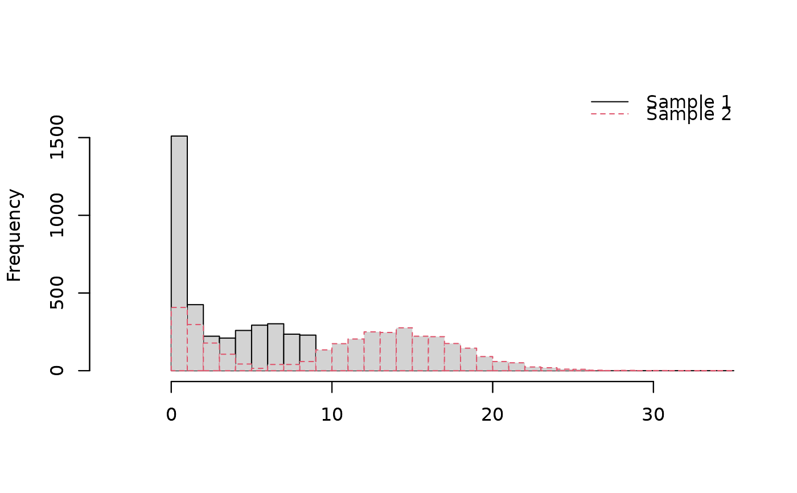

Plot the density of some given sample(s) with mixture distributions.
Source:R/plot_mixt_density.R
plot_mixt_density.RdPlot the density of the sample(s) with optional arguments to improve the visualization.
Usage
plot_mixt_density(
samples,
user.bounds = NULL,
support = c("continuous", "discrete"),
main = ""
)Arguments
- samples
Observed samples (mixture distributions) from which the density will be plotted.
- user.bounds
(default to NULL) Bounds to limit the range of x-axis when plotting.
- support
Support of the distributions, to know whether density plot or histogram should be displayed.
- main
Title for the plot.
Author
Xavier Milhaud xavier.milhaud.research@gmail.com
Examples
##### Continuous support:
list.comp <- list(f1 = "norm", g1 = "norm",
f2 = "norm", g2 = "norm",
f3 = "norm", g3 = "norm")
list.param <- list(f1 = list(mean = 5, sd = 1), g1 = list(mean = 2, sd = 0.7),
f2 = list(mean = 0, sd = 1), g2 = list(mean = -3, sd = 1.1),
f3 = list(mean = 9, sd = 1), g3 = list(mean = 6, sd = 2))
## Simulate data:
sim1 <- rsimmix(n = 300, unknownComp_weight = 0.8, comp.dist = list(list.comp$f1,list.comp$g1),
comp.param = list(list.param$f1, list.param$g1))$mixt.data
sim2 <- rsimmix(n= 250, unknownComp_weight = 0.85, comp.dist = list(list.comp$f2,list.comp$g2),
comp.param = list(list.param$f2, list.param$g2))$mixt.data
sim3 <- rsimmix(n= 400, unknownComp_weight = 0.6, comp.dist = list(list.comp$f3,list.comp$g3),
comp.param = list(list.param$f3, list.param$g3))$mixt.data
plot_mixt_density(samples = list(sim1,sim2,sim3), user.bounds = NULL, support = "continuous")
####### Countable discrete support:
list.comp <- list(f1 = 'pois', g1 = 'pois',
f2 = 'pois', g2 = 'pois')
list.param <- list(f1 = list(lambda = 7), g1 = list(lambda = 1),
f2 = list(lambda = 2), g2 = list(lambda = 15))
sim1 <- rsimmix(n=4000, unknownComp_weight=0.5, comp.dist = list(list.comp$f1,list.comp$g1),
comp.param=list(list.param$f1,list.param$g1))$mixt.data
sim2 <- rsimmix(n=3500, unknownComp_weight=0.3, comp.dist = list(list.comp$f2,list.comp$g2),
comp.param=list(list.param$f2,list.param$g2))$mixt.data
plot_mixt_density(samples = list(sim1,sim2), user.bounds = NULL, support = "discrete")
